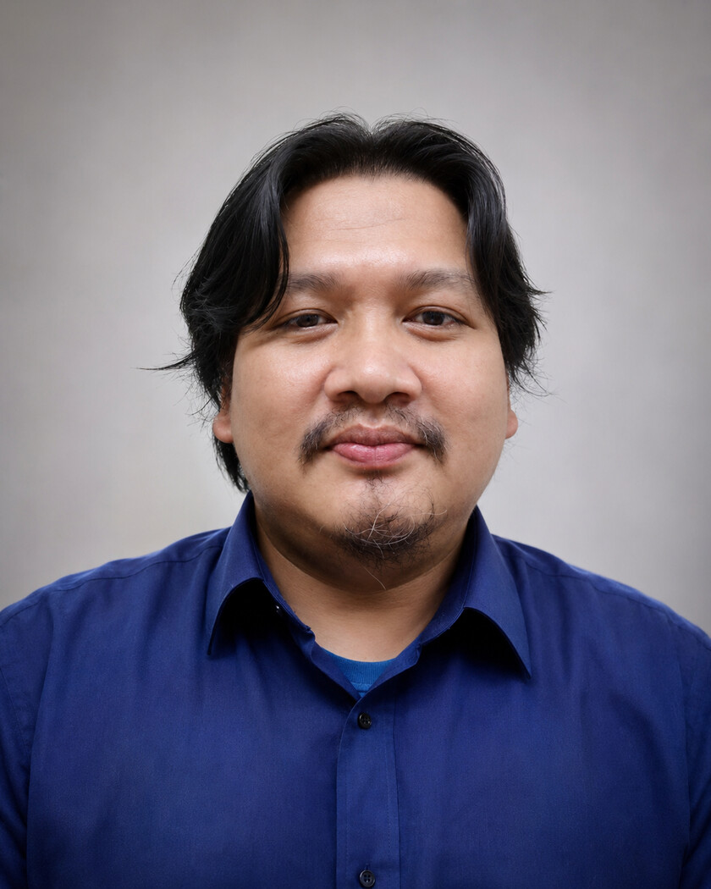

See the whole system
Memahami hubungan proses bisnis, data, manusia, dan teknologi.
Open to meaningful technology challenges
Saya Umar Junaedi, Senior IT Manager yang membangun enterprise systems, memimpin tim, dan menghubungkan teknologi dengan operasi nyata.

Senior IT Manager
Enterprise Systems
Digital Transformation
01 / Tentang saya
Peran saya berada di antara strategi, produk, dan eksekusi teknis. Saya membantu organisasi memetakan proses, memilih pendekatan yang tepat, lalu mengantarkannya menjadi sistem yang bisa dipakai sehari-hari.
Berbasis di Cimahi, Jawa Barat, saya terbiasa bekerja pada lingkungan logistik, distribusi, fleet, warehouse, sumber daya manusia, dan aplikasi pendidikan.
Senior IT Manager | Enterprise System, ERP, HRIS, FMS/WMS & IT Infrastructure | Digital Transformation for Logistics Operations.
Memahami hubungan proses bisnis, data, manusia, dan teknologi.
Solusi yang baik membantu pengguna menyelesaikan pekerjaan lebih sederhana.
Menyatukan arah tim melalui prioritas, komunikasi, dan keputusan terukur.
Membangun sistem sebagai proses berkelanjutan, bukan proyek sekali selesai.
02 / Pengalaman
Ringkasan dari pengalaman profesional yang tercantum pada profil publik dan CV.
PT Tirta Nusa Persada
Memimpin arah teknologi dan pengembangan sistem untuk mendukung operasi bisnis, enterprise application, infrastruktur, serta transformasi digital.
PT Sapta Sari Tama
Mengelola kebutuhan IT dan pengembangan aplikasi dengan fokus pada kesinambungan layanan, efektivitas proses, dan dukungan pengguna bisnis.
Berbagai lingkungan bisnis
Membangun fondasi pengalaman melalui implementasi aplikasi, analisis kebutuhan, pengembangan sistem, dan pemecahan masalah operasional.
03 / Karya terpilih
Platform bimbingan dan konseling sekolah dengan pendekatan multi-school, modul pemetaan siswa, dan fondasi pengembangan produk berkelanjutan.
Integrasi sistem untuk sales, finance, payroll, fleet, warehouse, attendance, dan operasi distribusi.
Gateway percakapan untuk akses informasi operasional, reminder approval, dan integrasi workflow.
Monitoring performa server, service availability, keamanan, dan pelaporan terjadwal untuk operasi yang lebih siap.
04 / Kapabilitas
Strategy & leadership
Build & integrate
Run & improve
05 / Mari terhubung
Terbuka untuk percakapan tentang kepemimpinan IT, enterprise systems, transformasi digital, dan kolaborasi produk.